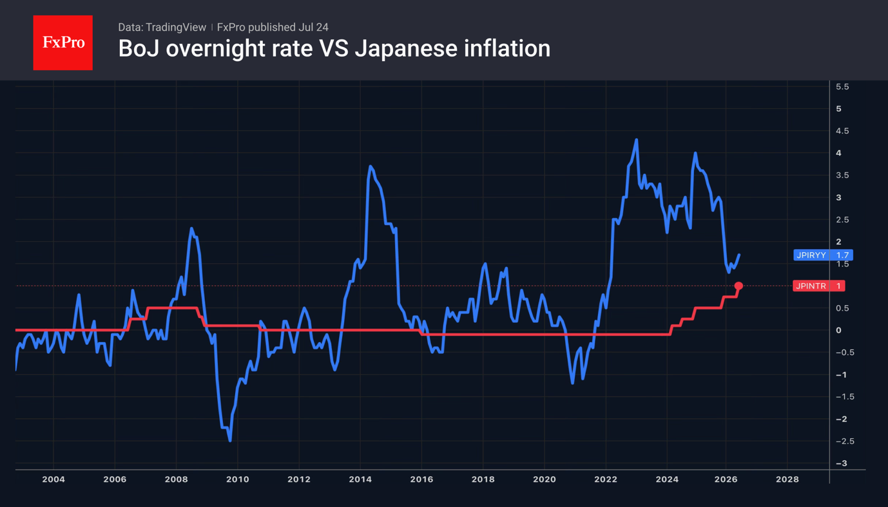

- The Brent crude rally is a bigger ‘bearish’ factor for EURUSD than the ECB.
- The Fed may spring a surprise as early as July.
The US dollar paid no heed to the ECB’s hawkish rhetoric and continued its advance against major global currencies, including the euro. The European Central Bank left its deposit rate at 2.25%, keeping the door open to further hikes. Christine Lagarde noted that several Governing Council members had considered acting again now, but a unanimous decision was made to wait.

The ECB was the first of the world’s leading central banks to react to the conflict in the Middle East, tightening monetary policy in June. It has room for manoeuvre. The deposit rate is 150 basis points below the Fed's, so there is scope for it to rise. The futures market is pricing in two rounds of monetary tightening in 2026, with the first expected in September or October.
However, the fate of the EURUSD is decided not in Frankfurt, but in Washington. In the FOMC’s latest rate forecasts, half of the officials expected a rate hike, whilst the rest expected rates to remain unchanged. At the same time, oil prices are rising above the critical $100 per barrel level, increasing the chances of a move up by the Fed as early as its July meeting. CME derivatives currently put the probability of this at 34%.
Meanwhile, the White House has announced the introduction of new tariffs of 10–12.5% on several dozen countries, covering more than 99% of total US imports. These will replace the temporary 10% import duties, which are due to expire on 24 July. As the rates differ little from the previous ones, this has had little impact on the markets. Nevertheless, Washington’s intention to continue pursuing trade wars, despite the Supreme Court’s rulings, should be a cause for concern among investors.

The yen is on track for its biggest weekly loss in the last two months, as investors brush aside the government’s verbal interventions and rumours of faster monetary tightening by the Bank of Japan than the markets expect.
The BoJ now has another reason to act in June, the key inflation indicator rose for the first time in three months, reaching 1.6%. Nevertheless, investors do not expect an overnight rate hike at the Policy Board’s July meeting. As a result, USDJPY is rising steadily.